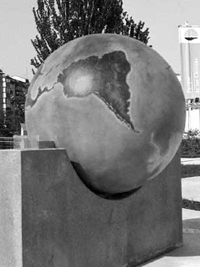
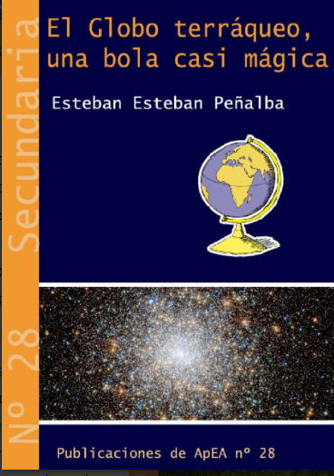

Al principio de este apartado, hemos visto que un globo terráqueo es un instrumento ideal para representar nuestro planeta a escala y de una manera muy fiel. Si lo sacamos de su peana, le quitamos la orientación que tiene y lo ponemos "paralelo" a la Tierra. Podremos aprender muchas cosas sobre el lugar que ocupamos en la Tierra.
¿Paralelo a qué?
Si lo colocamos de manera que en la parte más alta no esté el polo norte sino España y más exactamente, la ciudad en la que te encuentras (eso va a depender mucho del tamaño del que globo que tengas), lo colocamos sobre la dirección N-S con el polo norte del globo terráqueo hacia el N, habremos colocado el eje del globo terráqueo paralelo al real de nuestro planeta.

Nuestro globo terráqueo mostrará las mismas luces y sombras que el Sol está produciendo sobre la Tierra en ese momento.
¿Qué podemos observar?
Una vez que hayamos colocado nuestro GT en esa posición y lo pongamos al Sol
- Tendremos sobre la maqueta las mismas luces y sombras que el Sol está produciendo sobre la Tierra en el momento en que la miramos.
- Podremos ver dónde de día y dónde es de noche. La línea de separación es algo difusa, correspondiente al crepúsculo, y podremos comprobar como avanza a lo largo del día.
- Si colocamos pequeños gnomones siguiendo nuestra meridiana, comprobaremos que las direcciones de las sombras varían poco a poco con la latitud y que solo se alinean al mediodía y con una curiosidad: las del hemisferio norte se dirigirán al polo norte, mientras que las del hemisferio sur apuntan al sur.
- Si en esta posición colocamos un gnomon más o menos sobre la localidad donde hemos realizado la experiencia y vamos girando la esfera en sentido antihorario (como gira la Tierra en su movimiento de rotación) comprobamos como las sombras que proyecta son las mismas que hemos registrado a lo largo de la actividad y que el movimiento del Sol en el cielo es un "movimiento aparente". Quien realmente se mueve, produciendo las sombras que hemos registrado, es la Tierra.
Podemos aprender mucho más sobre este tema si utilizáis la magnifica guía de Esteban Esteban, publicada en el monográfico nº 28 de la Asociación para la Enseñanza de la Astronomía (APEA) cuyo título es "El Globo terráqueo, una bola casi mágica".
